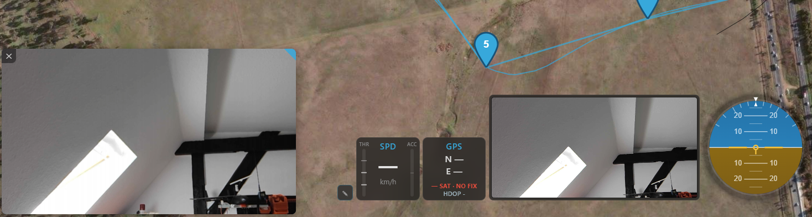
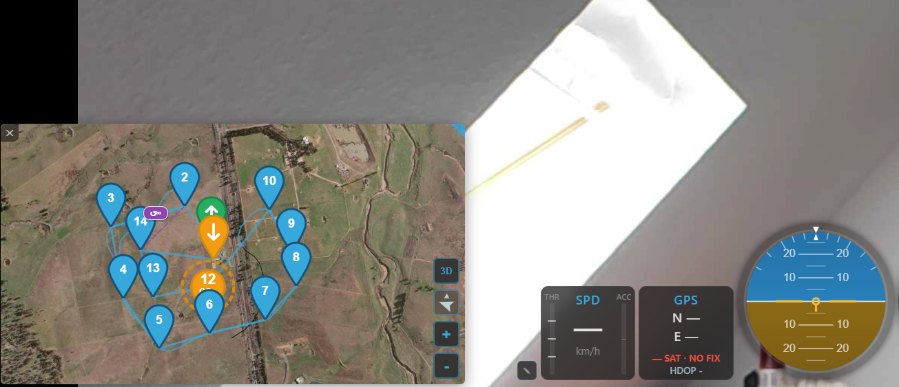

Video¶
Kite can show a live video feed alongside (or behind) the map — a local capture device such as a webcam or USB capture card, or an RTSP stream from a network video source. Open it from the Video tool on the navigation rail.
Choosing a source¶
Pick the source kind from the dropdown, set it up, then Start / Stop the feed. Your choice is remembered between sessions.
- Camera (device) — a local capture device opened the simple way, through the system's built-in camera access. Choose a device from the dropdown (webcams and capture cards the system exposes are listed automatically). No extra downloads.
- Native Capture (Advanced) — a local capture device opened via Kite's capture engine for more control and wider device support. See the comparison below.
- RTSP (network) — enter the stream URL (e.g. from your video receiver or an RTSP server), pick a transport, and optionally save the connection to a list for one-click recall — see RTSP connections below.
Supported RTSP video codecs
H.264 and MJPEG are supported and tested everywhere. H.264 is the usual choice; MJPEG costs more bandwidth but is passed through untouched — the lightest option wherever nothing should be converted (see the platform notes). HEVC/H.265 plays wherever the Kite RTSP client does the decoding: always on Android, and on Windows and Linux with the Native RTSP client toggle on (hardware decode; Windows additionally needs the free "HEVC Video Extensions" from the Microsoft Store). On macOS, HEVC is not available.
Other codecs — VP8, VP9, AV1 — are not supported. A stream Kite cannot play usually shows up as an endless "Reconnecting…" rather than a clear error. If you need one of them, please open a request: the limit is that we have no way to test it, not that it is impossible.

The Video panel — source kind, device / RTSP URL, resolution, frame rate and mirror, with Start/Stop.
Camera (device) vs Native Capture — which should I use?¶
Both play a local capture device; they differ in how they open it.
| Camera (device) | Native Capture (Advanced) | |
|---|---|---|
| Setup | Nothing to install | Needs the ffmpeg helper (downloaded automatically) |
| Device list | What the system exposes to apps | Read directly from the capture hardware — can find devices the Camera list doesn't show (e.g. some USB HDMI capture dongles) |
| Resolution / frame rate | A request — Auto / 720p / 1080p and an optional 30 / 60 fps wish; the camera picks the closest mode it supports | Device-verified — only the resolutions and frame rates your device actually reports (from a curated FPV set: SD PAL/NTSC, 480p, 720p, 1080p, 1440p) |
| Codec | Chosen automatically | Chosen automatically to hit the selected resolution/frame rate |
Start with Camera (device). Switch to Native Capture (Advanced) if your device isn't listed under Camera, or when you want to pin an exact resolution / frame rate that the device confirms it supports. Both deliver the same smooth, hardware-accelerated picture for devices the system can open; Native additionally reaches devices that only the capture engine can see.
Resolution, frame rate and mirror¶
- Resolution — Camera offers Auto / 480p / 720p / 1080p; Native offers the device-verified list.
- Format (Native only) — the capture format the device reports, e.g. MJPEG or a raw one. MJPEG is the efficient choice: the picture is passed straight through with no conversion at all.
- Frame rate — Camera offers Auto / 30 / 60 fps; Native offers the frame rates the device reports for the chosen resolution and format.
- Mirror — flip the image horizontally (handy for front-facing cameras). Applies to every place the feed is shown.
- Disable hardware acceleration — force the CPU for any stream conversion. Only needed if the picture is broken or unstable with hardware acceleration; the setting is remembered.
While a feed is live the panel names the pipeline underneath the picture, with two labels:
Transcode (Copy = nothing is converted · Hardware · Software) and Surface (how the
picture reaches the screen). Copy is the cheapest possible case.
RTSP connections, transport and auto-reconnect¶
The RTSP source has a small connection manager built in:
- Direct connect — type the
rtsp://…URL and press Start. Next to the URL sits the transport selector:- Auto (default) — lets the engine negotiate the transport, and falls back to an ffmpeg reader for the rare server that refuses every forced transport. Right for most sources.
- UDP — lowest latency; required for UDP-only servers (some FPV / air-unit streamers).
- TCP — for sources that only speak interleaved TCP, or when UDP is blocked by the network.
- Save it — the 💾 button stores the current URL + transport as a named entry (named after the host; rename it via ✎). Connections are only saved when you press the button — never automatically.
- The list — each saved connection is a one-line entry: click it to load and connect, ✎ edits name / URL / transport inline, ✕ removes it. The entry matching the current URL is highlighted.
- Smoothing buffer (frames) — below the connection list. 0 (the default) plays with the lowest possible latency; each step up buffers one frame time more on the receiving side (at 60 fps: ~17 ms per step, derived automatically from the stream's actual frame rate). Raise it if playback looks uneven — duplicated or skipped single frames — on a jittery link such as cellular; every step costs exactly that much extra latency, so leave it at 0 when the picture is already smooth. The setting takes effect immediately on the running stream and is remembered.
- Native RTSP client (experimental) — Kite's own built-in stream client: no helper downloads, UDP-first connection with automatic TCP fallback, and native hardware H.264/HEVC decode on Windows and Linux (Android always uses it; there is no toggle there). Recommended on Linux — see the platform notes. If a particular source misbehaves with it, switch it off to fall back to the classic engine path.
Auto-reconnect: if a running RTSP feed drops or stalls — a radio hole on a cellular link, the source restarting, a network change — Kite reconnects automatically and keeps trying indefinitely until the feed returns or you stop it. While it retries, every video surface shows a "Reconnecting… (n)" overlay with the attempt count and a Stop button. Brief dropouts on a live feed are given a few seconds to heal on their own before a full reconnect is forced, so momentary signal dips don't interrupt the stream unnecessarily.
Helpers download themselves
Camera (device) needs nothing extra, and RTSP with the Native RTSP client toggle on needs no helper either (on Android that is always the case). Native Capture uses the bundled ffmpeg engine. Classic-path RTSP (toggle off) uses MediaMTX for the direct video path and ffmpeg for the image path — a machine whose browser engine offers no direct path (common on Linux) uses ffmpeg alone and never needs MediaMTX. Kite downloads whichever it needs automatically the first time you use that source — no manual install. On macOS ffmpeg is shipped with the app.
Where the video shows¶
The same feed can appear in several places at once (they all share one stream):
- In the panel — a preview right in the Video panel.
- As a widget — the Video widget in a dock, sized to the stream's aspect ratio.
- In a floating window — a movable video frame over the map. Drag the video body to move it; dragging it to the bottom-left corner snaps it there, where it displaces the bottom widget dock to make room (the dock shrinks by the window's size). Drag it away from the corner to un-snap and free-float. The top-right corner grip resizes it (aspect-locked, touch-friendly). On a phone there is a docked window instead: fixed to the bottom-right of the map, sized to the stream (at most 40 % of the map height or half its width), no dragging or resizing. A camera button above the map buttons slides it off-screen to the right and back — it appears once a source runs and hides while the Video widget is active. The panel on the phone has no preview.
- In a detached window (Windows only — see the platform notes; the button is simply absent elsewhere) — a separate, free-floating OS window you can place anywhere, including outside the app or on a second monitor. Opened from the Video panel; because it lives outside the app it's closed from the OS (not from inside Kite), and — unlike the floating window — it can't host the map (no swap). It's also the lightest option: the OS draws it directly, so on low-power systems using only the detached window keeps GPU load to a minimum.

The floating video window (over the map) and the dockable Video widget — both showing the same feed.
Map ↔ video swap¶
Double-click a video surface (the Video widget or the floating window) to swap it with the map: the map jumps into the surface you clicked and the video moves out to the full-screen background — so you get video as your main view with the map in the small frame. Double-click again to send the map back to the full-screen background.
How interactive the swapped-in mini-map is depends on where it landed:
- In the widget — deliberately limited by space: 2D only and heading-follow only, but you can zoom. Nothing else on that little map reacts (no waypoint placing or dragging, no context menu), and its markers are drawn at half size. Switching the mission editor on brings the map back to full screen automatically.
- In the floating window — fully interactive: pan and zoom normally (left-drag / single-touch). To move the floating frame itself while it holds the map, drag with the right mouse button (desktop) or two fingers (touchscreen).
- On a phone (docked window or widget) — the widget's limits apply: 2D, heading-follow, no panning. Double-tap swaps. With the video full-screen, the corner button becomes a map button that hides and shows the small map; double-tap the full-screen video to send the map back. Unobstructed fullscreen does not exist on the phone — the video fills the map area next to the widget column.

Swapped: the live video fills the background while the map rides in the smaller frame.
Unobstructed fullscreen¶
By default the swapped-in video fills the whole content area edge to edge — widgets, docks and the nav rail float on top of the picture. If you prefer the picture fully visible, turn on Unobstructed fullscreen in the Video panel (below Rotate 180°):
- The video becomes a framed box that keeps clear of the UI: the nav-rail column on the left is always kept free, and the right widget panel and the bottom widget dock are kept free while they hold widgets. An empty (or hidden) panel releases its edge, and the video grows into that space — as far as the stream's aspect ratio allows.
- The box is cut exactly to the stream's aspect ratio, so there are no letterbox bars.
- The area around the box shows a softly blurred map of the surroundings that follows your aircraft — the live UAV position when there is a GPS fix, the replayed model during a blackbox replay, or the ground-station location otherwise. With no position available the background stays plain.
The switch is remembered; turn it off to get the edge-to-edge fullscreen back.
Platform notes: what to expect per operating system¶
Video is the one part of Kite that depends heavily on components Kite does not ship: the operating system's built-in browser engine and its media plugins. That works out very differently per platform, and it is only fair to say so plainly.
Windows and macOS are the more predictable hosts for video. Both ship a single, consistent media stack, so a network stream is played directly by the system's hardware-accelerated decoder. If a smooth, low-CPU, low-latency feed is important to you — and especially if you plan to fly with it — those are the platforms we can most confidently recommend. For RTSP network streams, Linux joins them once the Native RTSP client is switched on — see below.
On Linux, switch on the Native RTSP client for network streams. With that toggle (Video panel →
RTSP section) Kite plays RTSP itself: H.264 and HEVC go straight into the machine's hardware
decoder — Intel/AMD graphics via VA-API, the Raspberry Pi 4's H.264 and the Pi 5's HEVC block via
V4L2, with an
automatic software fallback — and the picture is composited natively behind the interface instead of
being converted frame by frame. Measured on one laptop, a 720p60 HEVC stream plays at a stable 60 fps
for roughly a third of one CPU core where the classic path burned more than two cores and still could
not hold 50 fps. MJPEG sources are passed through untouched, as always. The client uses the
distribution's GStreamer plugins (the .deb installs them automatically; elsewhere:
gstreamer1.0-plugins-base, …-good, …-bad, gstreamer1.0-gtk3 and gstreamer1.0-libav, or your
distro's equivalents) — if one is missing, Kite reports which GStreamer element it could not find.
Raspberry Pi 5 and HEVC
Encoders that pad the picture height to their block size — NVENC at 720p codes 736 rows, every 1080p stream codes 1088 — declare the visible part in the stream header. The Pi 5's decoder path in GStreamer would copy every picture to apply that crop, which the zero-copy display cannot take. Kite instead lets the decoder deliver the full padded picture and hides the padding rows under the interface, so these streams stay zero-copy as well.
The Pi 5's decoder also cannot paper over a lost picture: a picture whose reference never arrived stalls it, and the Pi's kernel driver then hangs until a reboot. Kite therefore holds the video after any lost packet until the next keyframe arrives — a short pause instead of a frozen decoder. A short keyframe interval at the encoder (1 s) keeps that pause short.
AppImage: video does not work there
The AppImage build cannot play video on either path — the AppImage's launcher environment hides the system's GStreamer plugins from every process inside it. Use the .deb, .rpm or the portable build instead; the AppImage is provided for a quick look at everything else and is planned to be retired.
With the Native RTSP client off, video support is provided as-is. Kite then runs video through WebKitGTK, which hands playback to GStreamer — and which plugins your distribution installs is entirely up to your distribution. There are hundreds of combinations of distro, desktop, graphics driver and plugin set, and we cannot test or support them all. Concretely, these are things Kite cannot fix from its side on that classic path:
- Whether an RTSP stream can be played directly at all. Many Linux systems — Raspberry Pi OS and current Debian desktops among them — run a browser engine that does not expose the direct (WebRTC) video path, and that cannot be installed after the fact. Kite then falls back to a converted image stream. It works, but it adds a conversion, so expect noticeably more latency than on Windows or macOS — this is the single biggest practical difference. If a smaller delay matters more than resolution, send a smaller or slower stream from the source (e.g. 480p instead of 720p, or 30 instead of 60 fps): that saves work at every stage at once.
- How much each frame costs to put on screen. The image path decodes every frame for display, and the Linux engine is markedly slower at that than the Windows one — measured on one laptop, the same 720×576 frame took about 13 ms against roughly 2 ms, and longer while the machine was busy. So a frame rate that is effortless on Windows can be out of reach on comparable Linux hardware, whatever the CPU says.
- Whether that conversion uses your graphics hardware. Kite tests your machine at start-up and uses the GPU for the conversion when it can — on Intel and AMD desktop graphics via VAAPI, and on Raspberry Pi 3/4 class boards via their built-in decoder. Where that works it is a large saving (measured on an Intel laptop: roughly a seventh of the CPU load). But it depends entirely on your driver stack: NVIDIA cards are not specifically covered, and any machine whose test fails simply converts on the CPU instead. The Video panel names the path in use, and the diagnostic log records the verdict (see Video troubleshooting).
- A camera that already delivers MJPEG is the best case on Linux. Nothing is converted at all — the picture is passed through unchanged, which costs almost nothing and gives the lowest delay Linux can offer. If latency is your priority on Linux, prefer an MJPEG source. The Video panel shows Transcode: Copy when this applies.
- You can force the CPU path. If hardware conversion misbehaves on your machine, switch on Disable hardware acceleration in the Video panel; the setting is remembered.
- Local camera quirks. On Linux the system camera layer can be slow or unresponsive on some setups. Kite works around the worst cases (it caps the automatic resolution and frame rate, and routes the advanced capture path around that layer entirely), but a camera the system itself can't open cleanly is out of reach.
- Picture-in-Picture (the detached "Video Window") is a Windows-only feature — neither the Linux nor the macOS browser engine offers the interface Kite would need for it. All the in-app surfaces (panel, widget, floating window, full-screen swap) work everywhere.
None of this means Linux is unusable — with the Native RTSP client it is a first-class platform for network video, and a well-equipped desktop distribution generally plays the classic path fine too. In short: on Linux, try the Native RTSP client first for RTSP; an MJPEG source is the lightest choice either way.
On Android, RTSP runs entirely through Kite's own built-in stream client — there is nothing to download and no engine choice: H.264 and HEVC are decoded by the device's hardware decoder, and MJPEG streams are shown directly. (On iOS, RTSP is not available yet.)
- Location updates pause during a Wi-Fi stream. Every live location fix makes Android scan for Wi-Fi networks, and each scan takes the Wi-Fi radio off your network's channel for a moment — with an RTSP stream running over that same Wi-Fi, this shows up as a brief dropout roughly every ten seconds. Kite therefore pauses the continuous GCS-marker location mode automatically while an RTSP stream is playing over Wi-Fi: the GCS marker freezes at its last position and updates resume the moment the stream stops. Streams received over mobile data (or Ethernet) are not affected, and neither is a manually placed GCS marker. When Kite cannot tell which way the stream travels (some VPN setups), it pauses to be safe.
Where to go next¶
- Put the Video widget in a dock: Telemetry & display.
- Trouble getting a stream? Video troubleshooting.